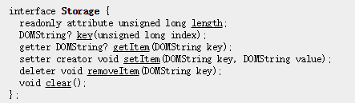
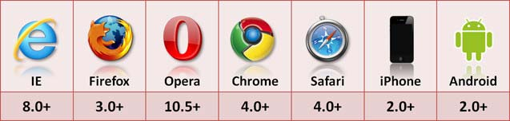

1. what is html5 ?
HTML5 is the latest version of Hypertext Markup Language(HTML), the standard programming language for describing the contents and appearance of Web pages
It's actually three kinds of code: HTML, which provides the structure; Cascading Style Sheets (CSS), which take care of presentation; and JavaScript, which makes things happen
2. what does html5 do ?
Cache Manifest make web applications still work when you're offline
GeoLocation tell websites where you are physically located
Video handle high definition video.
Canvas deliver extraordinary graphics
ARIA make sites more accessible
File System APIDrag and DropWeb StorageWeb WorkersWebSocketPrefetch PrerenderWebRTCWebGLSemantic ElementsXMLHttpRequest2Server-Sent Events(SSE)Custom Data ...
3. key difference between html4 and html5
Simple Syntax
Better Web Application Features(New JS API,Attribute,ARIA)
Consistency in Handling Malformed Documents
Backwards Compatibility
New Semantic Element
GeoLocation
navigator.geolocation.getCurrentPosition
(
success_callback_function,
error_callback_function,
position_options
)
navigator.geolocation.watchPosition
(
success_callback_function,
error_callback_function,
position_options
)
navigator.geolocation.clearWatch(watch_position_id)
prefetch and prerender
Semantic Element

Web Storage
localStorage
sessionStorage
 